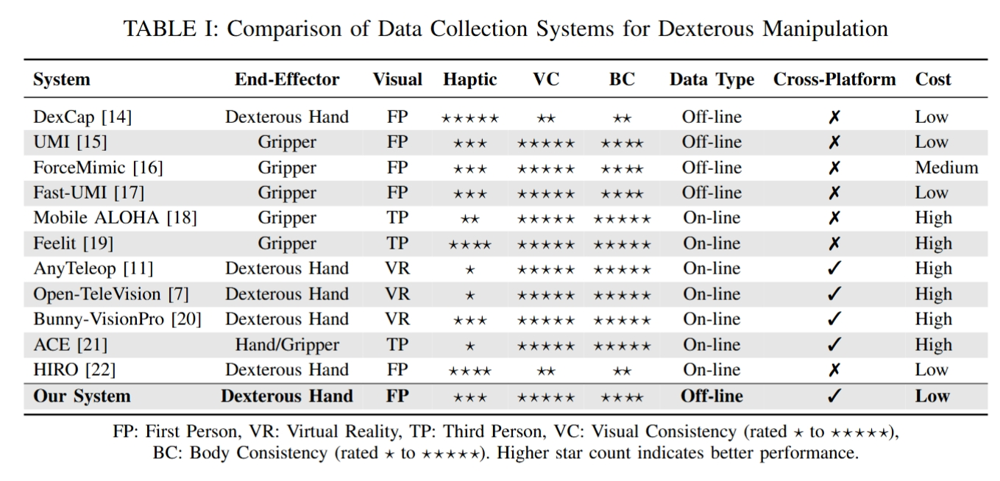
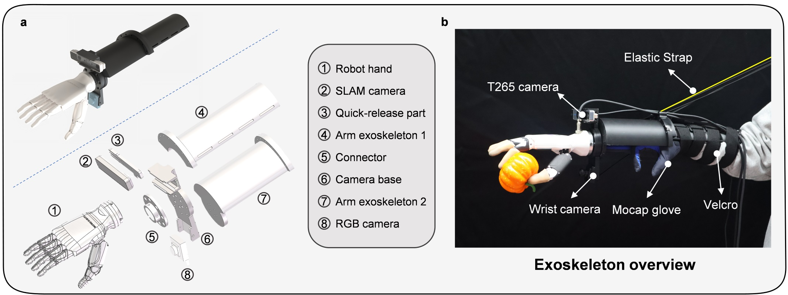
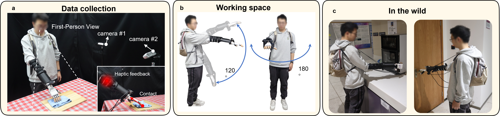
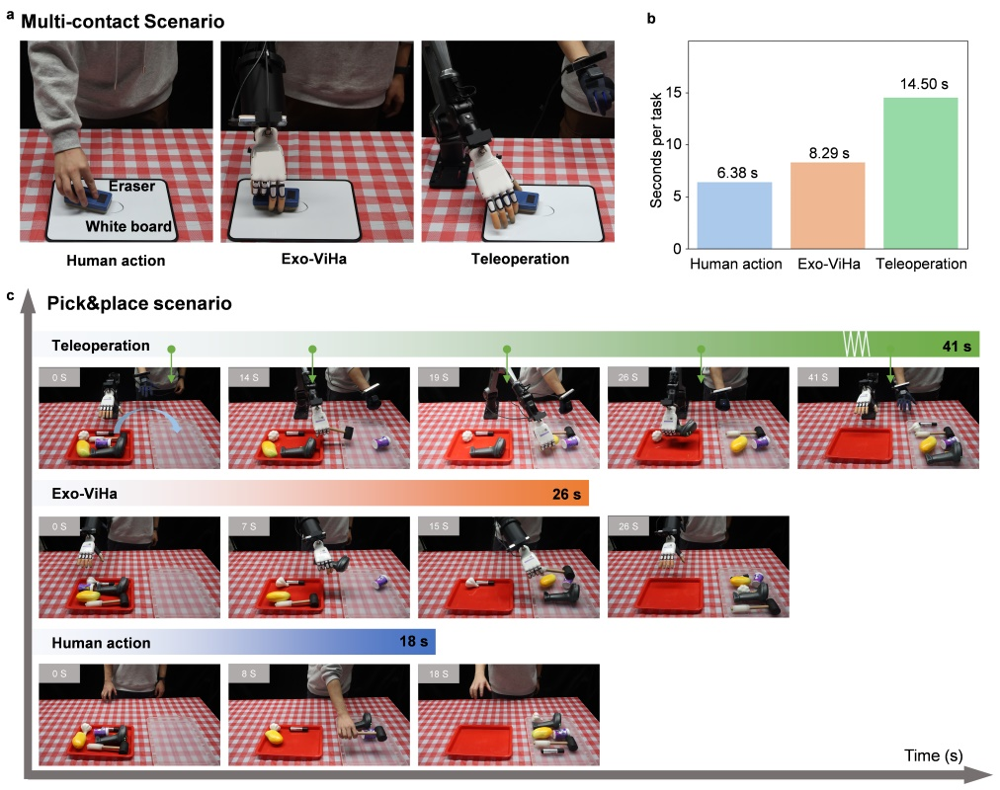
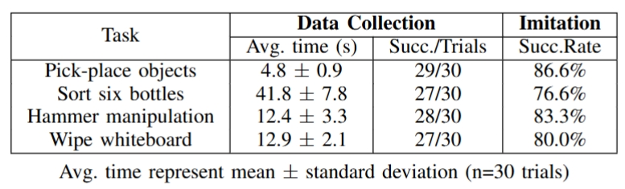

Imitation learning has emerged as a powerful paradigm for robot skills learning. However, traditional data collection systems for dexterous manipulation face challenges, including a lack of balance between acquisition efficiency, consistency and accuracy.
To address these issues, we introduce Exo-ViHa, an innovative 3D-printed exoskeleton system that enables users to collect data from a first-person perspective while providing real-time haptic feedback. This system combines a 3D-printed modular structure with a slam camera, a motion capture glove, and a wrist-mounted camera. Various dexterous hands can be installed at the end, enabling it to simultaneously collect the posture of the end effector, hand movements, and visual data. By leveraging the first-person perspective and direct interaction, the exoskeleton enhances the task realism and haptic feedback, improving the consistency between demonstrations and actual robot deployments. In addition, it has cross-platform compatibility with various robotic arms and dexterous hands. Experiments show that the system can significantly improve the success rate and efficiency of data collection for dexterous manipulation tasks.


The exoskeleton was fabricated by 3D printing using PLA material.
The overall weight of the exoskeleton system is about 0.425kg when
the dexterity hand is not installed, and the specific weight when
using depends on the weight of the dexterity hand assembled
(for example, the weight is about 1.1kg after the dexterity hand is installed).
The time from wearing the exoskeleton system to starting data collection is about 1 minute,
which greatly improves the efficiency of data collection.

(a) Demonstration of the exoskeleton used for data collection and schematic diagram of the first-person perspective and haptic feedback. (b) Illustration of the working space range. (c) The power source and microcomputer are placed into a backpack, allowing the system to be used for data collection in outdoor environments.
The visual information captured by the camera #1, camera #2 and the wrist camera is basically consistent during both the data collection and deployment phases.

(a) Multi-contact interaction scenarios demonstrating human action, Exo-ViHa and teleoperation; (b) Quantitative time efficiency comparison across methods. (c) Pick and place scenario demonstrating the execution process for teleoperation,Exo-ViHa, and human action.

In this study, we introduced the Exo-ViHa system, a novel 3D printed exoskeleton designed to
achieve a balance between data collection efficiency, consistency, and accuracy in dexterous tasks.
Experiments have demonstrated that the data collection efficiency achieved with this system
is nearly identical to that of human actions, significantly surpassing the efficiency of traditional
teleoperation methods.And the success rate of automatic task deployment in multi-contact
tasks after training reaches about 80%, demonstrating the effectiveness and efficiency of the system.
Future work will focus on further structural improvements to the system: the forearm exoskeleton will
be optimized to provide additional working space and comfort for the user's hand.
Additionally, as data collection is a relatively lengthy process, improving the gravity
compensation mechanism will be a key area of focus.Meanwhile, we will focus on evaluating the Exo-ViHa
system in real-world settings, aim to ensure the system's practicality and effectiveness across diverse applications.
This work was supported by National Key R&D Program of China (No.2024YFB3816000), Shenzhen Key Laboratory of Ubiquitous Data Enabling (No. ZDSYS20220527171406015), Guangdong Innovative and Entrepreneurial Research Team Program (2021ZT09L197), and Tsinghua Shenzhen International Graduate School-Shenzhen Pengrui Young Faculty Program of Shenzhen Pengrui Foundation (No. SZPR2023005).
@article{chao2025exo,
title={Exo-ViHa: A Cross-Platform Exoskeleton System with Visual and Haptic Feedback for Efficient Dexterous Skill Learning},
author={Chao, Xintao and Mu, Shilong and Liu, Yushan and Li, Shoujie and Lyu, Chuqiao and Zhang, Xiao-Ping and Ding, Wenbo},
journal={arXiv preprint arXiv:2503.01543},
year={2025}
}